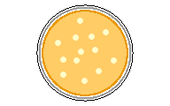

The bacterium you use in your laboratory activity is Escherichia coli, which has been grown in a petri dish on Luria Broth (LB) agar. Each colony in the petri dish is made up of millions of individual cells.

Select any colony to learn more about E. coli.